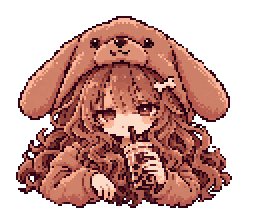
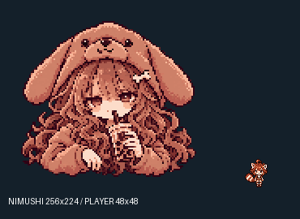

基準画像1枚のみ。全sheet未生成・正式renderer未接続。
実ゲーム静止プレビュー · collision overlay · 制作記録


確認：本人らしさ／可愛さと不穏さ／犬フード／顔と両目／タピオカ／PLAYER比／上部の存在感／弱点と接触の対応／PC・スマホ。
アートの目anchorは(64,57)、pivotは(64,20)の候補。旧案から両方20px上へ変更し、ゲーム内の目の位置は維持。C1 weak pointは顔より縦長です。接触矩形と髪・耳の外形は一致しません。